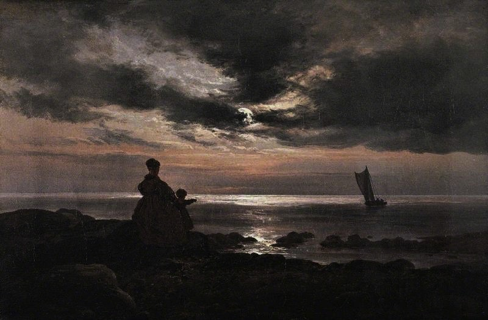

Living much of his life in Dresden, Dahl never forgot his Norwegian homeland, basing a lot of his landscape work off of his memories of the landscape and trips home (jonathan5485, 2011). His Mother and Child by the Sea was painted during a difficult time in his life, not long after the deaths of a lot of his family, and the same year that his great friend and inspiration Caspar Friedrich passed away. Some see the work as a homage to his friend, or as a reference to his own childhood, waiting for his father to return from his fishing trips (‘Johan Christian Dahl (1788–1857)’, 2012).

Dahl, Johan Christian Clausen; Mother and Child by the Sea; The Barber Institute of Fine Arts; http://www.artuk.org/artworks/mother-and-child-by-the-sea-33070
The painting is on a small canvas, in a way inviting the viewer in for a closer, more intimate viewing experience. It depicts the silhouettes a woman and child waiting for a fishing boat to return. I really love the contrast between the cold moonlight and the shadowy landscape, as it leaves a lot of the details of the scene up to one’s imagination. The child appears to be excited, but we can’t tell what the mother’s attitude is and there’s no way of knowing whether the trip has been successful or not.
In my own compositional response to the painting I want to create an impression of a natural landscape from sampled sounds, and then, similarly to how Dahl uses light to obscure details and ignite the imagination, abstract the sonic landscape with further processing.
Adrian de Lima · Some source sounds
Sources
jonathan5485, A. (2011) ‘Mother and Child by the Sea by Johan Christian Dahl’, My Daily Art Display, 5 July. Available at: https://mydailyartdisplay.uk/2011/07/05/mother-and-child-by-the-sea-by-johan-christian-dahl/ (Accessed: 12 November 2024).
‘Johan Christian Dahl (1788–1857)’ (2012) The Barber Institute of Fine Arts, 30 August. Available at: https://barber.org.uk/johan-christian-dahl/ (Accessed: 12 November 2024).
Republished from here (Archive.org)